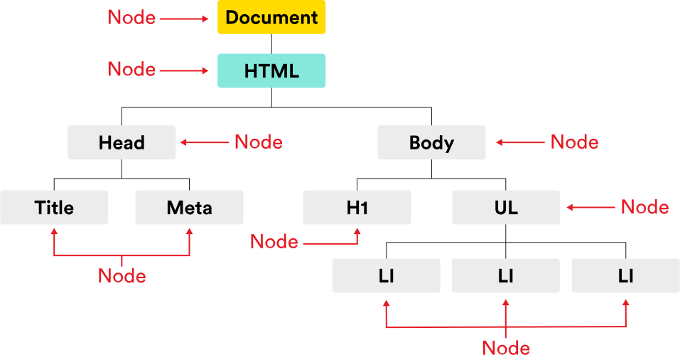

WDI prework
This project is maintained by Milisant
WDI Fundamentals Unit 11
Here are some notes on what’s been covered in this chapter. Feel free to copy this and extend it to make your own cheat sheet.
The browser pulls in HTML documents, parses them, and creates object models of the pages in its memory. This model is the Document Object Model (DOM).
Each element in the HTML document is represented by a DOM node. These nodes can be accessed and changed using JavaScript.
When the model is updated, those changes are reflected on screen.

Before we can update a page, we need to find, or select, the element(s) that we want to update. In order to find an element, we need to search through the document. The syntax for the search looks something like this:
document.getElementById('main')
| Method | Description |
|---|---|
getElementById() |
Selects an individual element within a document using a specific id |
querySelector() |
Uses CSS selector to select the first matching element within a document |
getElementsByClassName() |
Allows you to select all elements with a given class attribute |
getElementsByTagName() |
Locates all elements that match a given tag name |
querySelectorAll() |
Uses CSS selector to select one or more elements |
If we’d like to work with that element multiple times, a variable should be used to store, or cache, the results of our query.
var sidebar = document.getElementById('sidebar');
The process of selecting another element based on its relationship to a previously selected element.
| Property | Description |
|---|---|
parentNode |
Locates the parent element of an initial selection |
previousSibling |
Finds the previous sibling of a selected element |
nextSibling |
Finds the next sibling of a selected element |
firstChild |
Finds the first child of a selected element |
document.querySelector('li').parentNode
A NodeList is a list of node objects numbered similarly to arrays.
To locate the fourth item in this nodeList:
document.getElementsByTagName('li')[3];
The innerHTML and textContent properties can be used to access or update content:
| Property | Description |
|---|---|
innerHTML |
Get or set the HTML content of an element. |
textContent |
Get or set the text content of an element. |
The syntax for getting content looks like this:
var firstListItem = document.querySelector('li').innerHTML;
// Remember, `querySelector()` selects the first element that matches the provided selector.
The syntax for updating content looks like this:
document.querySelector('li').innerHTML = 'Email <a href="mom@gmail.com">Mom</a>.';
To add new elements to the page, we’ll need to use a three step process:
createElement() method to create a new element, which can then be added to the page. When this node is created, it will be empty. This element will be stored in a variable.innerHTML or textContent properties.appendChild() method. This will add an element as the last child of the parent element.To add a sixth item to our list we can execute the following code:
// First up, let's create a new list item and store it in a variable.
var newListItem = document.createElement('li');
// Now let's update the text content of that list item.
newListItem.textContent = 'Jalapenos';
// And finally, let's add that list item as a child of the ul.
document.querySelector('ul').appendChild(newListItem);
| Property | Description |
|---|---|
className |
Change the value of the class attribute for an element |
document.getElementById('important').className = 'highlight';
| Method | Description |
|---|---|
setAttribute() |
Sets an attribute of an element |
removeAttribute() |
Removes an attribute from an element |
document.getElementsByTagName('a')[0].setAttribute('href', 'http://newurl.com');
document.getElementsByTagName('a')[0].removeAttribute('id');
Actions taken by a user that can trigger updates in the DOM.
For example, when a user clicks on a website’s menu icon, a sidebar menu should slide out from the side of the page. Or, if the user has typed an incorrect format into a form field, the field should become outlined in red.
We can set up event handlers in our scripts that will listen, or wait, for an event to occur and then trigger a function.
The syntax for setting up an event handler looks like this:
element.addEventListener('nameOfEvent', functionToRun);
There are many events that can trigger a function. Here are a few:
| Event | Description |
|---|---|
'click' |
When a button (usually a mouse button) is pressed and released on a single element. |
'keydown' |
When the user first presses a key on the keyboard. |
'keyup' |
When the user releases a key on the keyboard. |
'focus' |
When an element has received focus. |
'blur' |
When an element loses focus. |
'submit' |
When the user submits a form. |
'load' |
When the page has finished loading. |
'resize' |
When the browser window has been resized. |
'scroll' |
When the user scrolls up or down on the page. |
###this
A term used in event handling functions to refer to the specific object with which the user interacted.